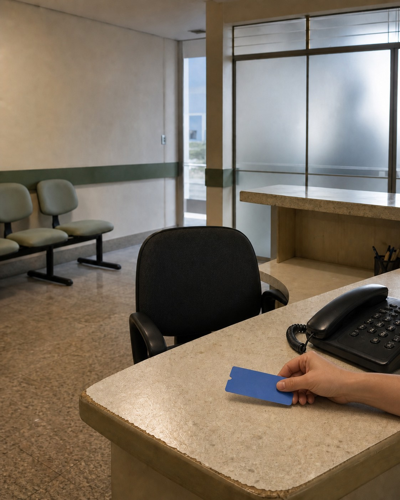

CENA ILUSTRATIVA / SEM DADOS DE CLIENTE
O lead
chegou.
A resposta, não.
OBSERVAÇÃO / TICKET PRESENTE · CADEIRA VAZIA
CENA ILUSTRATIVA / SEM DADOS DE CLIENTE
OBSERVAÇÃO / TICKET PRESENTE · CADEIRA VAZIA
DISTINÇÃO
Entre os dois existe uma operação.
FORMULÁRIO →
DISTRIBUIÇÃO →
1ª TENTATIVA
INTERVALO NÃO MEDIDO
MODELO CONCEITUAL
MODELO ILUSTRATIVO / SEM DADOS DE CLIENTE
CAMPOS EM BRANCO / NÃO É UM CRM
HIPÓTESE — CONFIRMAR COM CRM E REGISTROS DE CONTATO
TICKET PARADO / INTERVALO SEM DURAÇÃO INVENTADA
CENAS ILUSTRATIVAS / CONTEXTOS DE AUDITORIA

ANTES DA DISTRIBUIÇÃO
ANTES DA TENTATIVA
DEPOIS DA RESPOSTA
MÉTODO
SEM DURAÇÕES, SCORES OU DADOS DE CLIENTE
DECISÃO / CENA ILUSTRATIVA
O ticket só termina a rota quando chega a um responsável.
RESPONSÁVEL
PROPOSTA DE CTA — Salve este roteiro para a próxima auditoria.